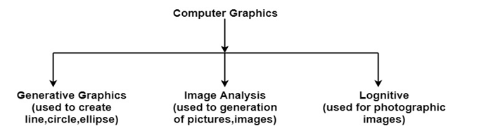

Suppose a shoe manufacturing company want to show the sale of shoes for five years. For this vast amount of information is to store. So a lot of time and memory will be needed. This method will be tough to understand by a common man. In this situation graphics is a better alternative. Graphics tools are charts and graphs. Using graphs, data can be represented in pictorial form. A picture can be understood easily just with a single look. Interactive computer graphics work using the concept of two-way communication between computer users. The computer will receive signals from the input device, and the picture is modified accordingly. Picture will be changed quickly when we apply command.
there are many filds where we use computer graphics
Computer-generated model of the physical, financial and economic system is often used as educational aids. Model of physical systems, physiological system, population trends or equipment can help trainees to understand the operation of the system. For some training applications, particular systems are designed. For example Flight Simulator. Flight Simulator: It helps in giving training to the pilots of airplanes. These pilots spend much of their training not in a real aircraft but on the ground at the controls of a Flight Simulator.
Molecular biologist can display a picture of molecules and gain insight into their structure with the help of computer graphics.
Town planners and transportation engineers can use computer-generated maps which display data useful to them in their planning work.
Architect can explore an alternative solution to design problems at an interactive graphics terminal. In this way, they can test many more solutions that would not be possible without the computer.
Example of presentation Graphics are bar charts, line graphs, pie charts and other displays showing relationships between multiple parameters. Presentation Graphics is commonly used to summarize
Computer Graphics are also used in the field of commercial arts. It is used to generate television and advertising commercial.
Computer Graphics are now commonly used in making motion pictures, music videos and television shows.
It is used for visualization of scientists, engineers, medical personnel, business analysts for the study of a large amount of information.
Computer Graphics is used in the development of educational software for making computer-aided instruction.
Computer Graphics is used for printing technology and textile design.